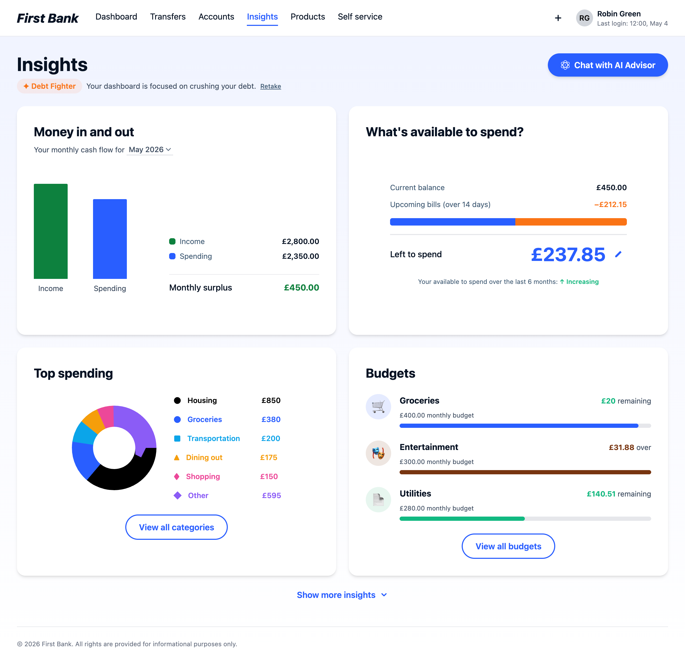
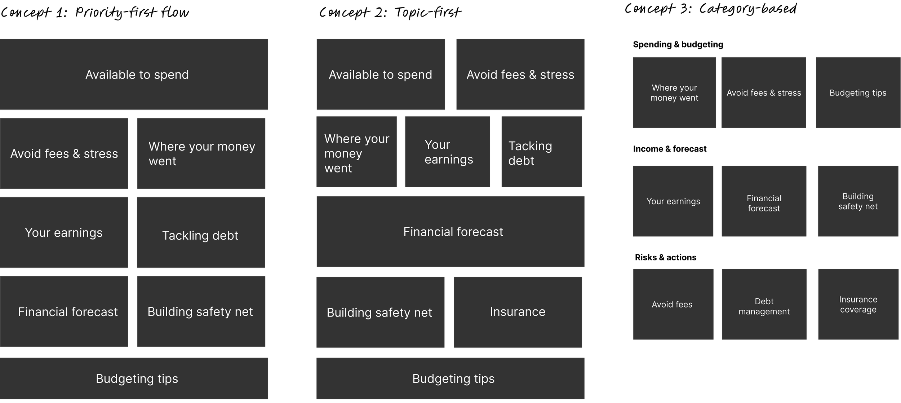
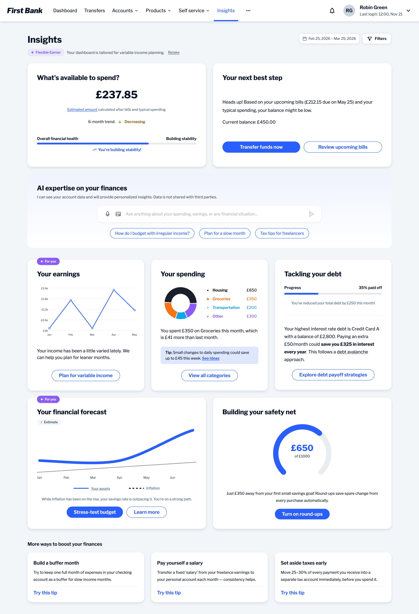
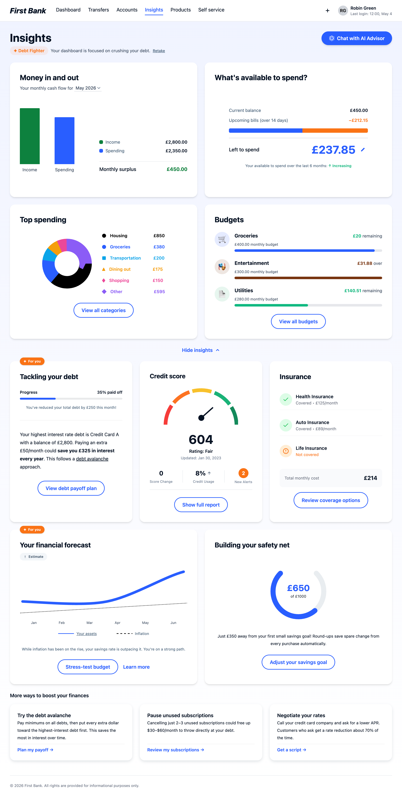
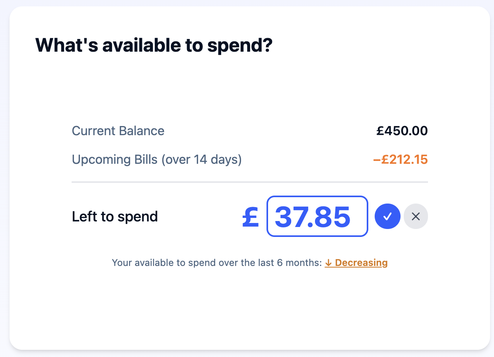
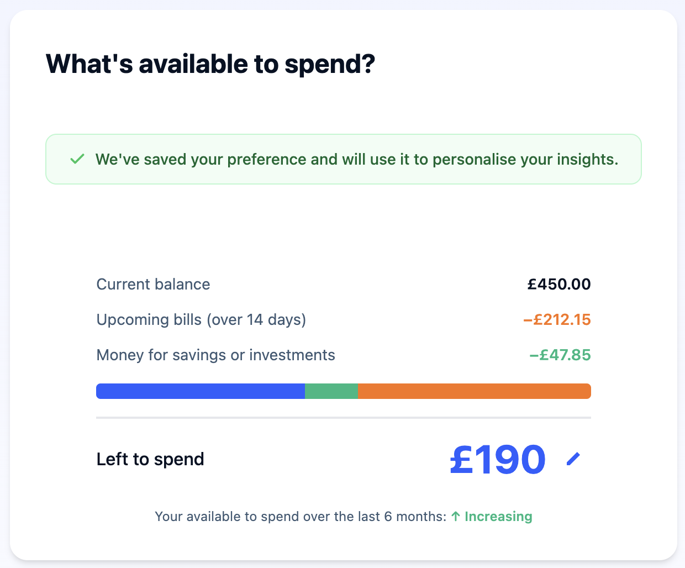
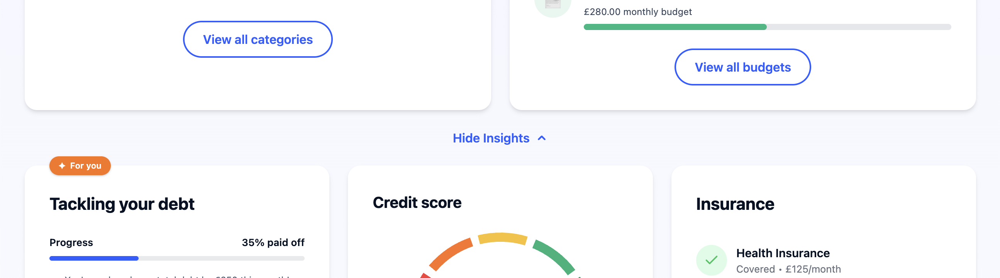
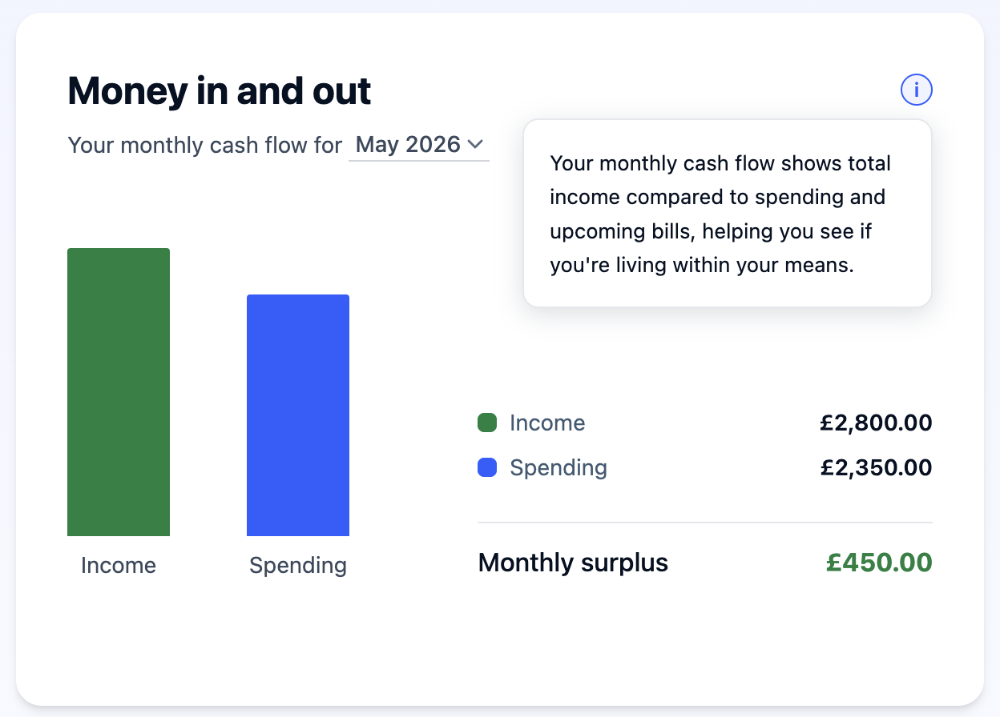
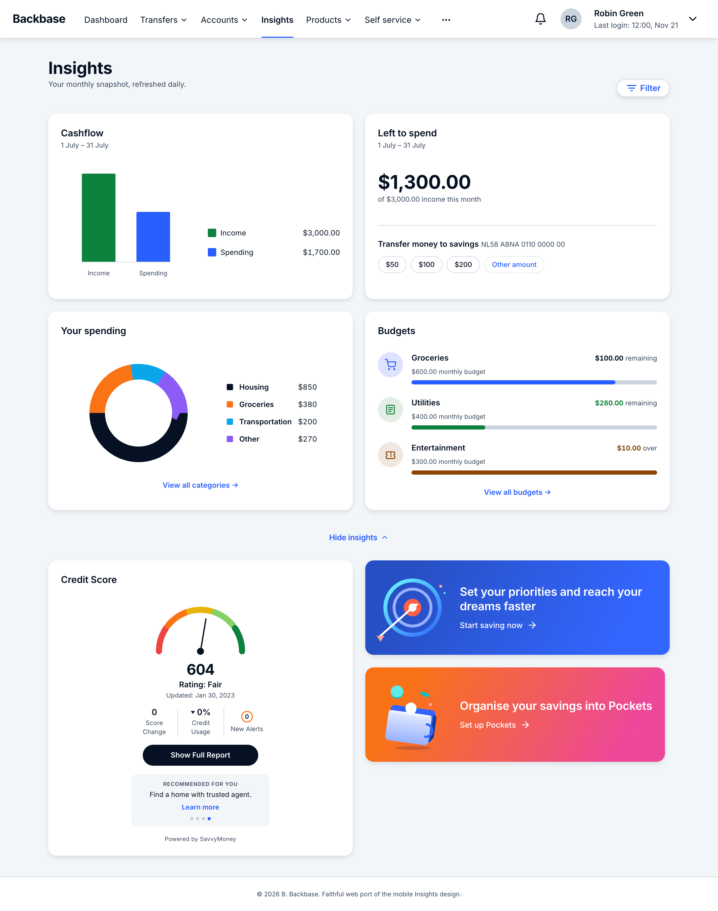
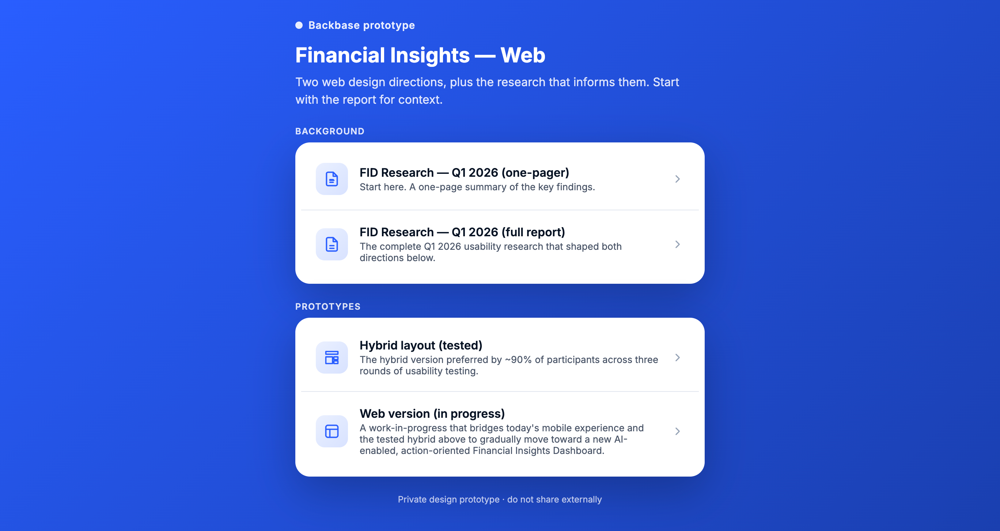

Before

Passive reporting: balance, spending history, no guidance
Current direction

Actionable: Left to Spend, AI guidance, expandable depth
Backbase · Amsterdam
Design an AI-powered Financial Wellness experience that increases engagement and supports smarter financial decisions, helping users understand not just where their money went, but what to do next.
Sole designer. Led research, concept design, prototyping, and 3 rounds of usability testing. Collaborated closely with Product and Engineering throughout.
90% preference for the Hybrid design across 3 testing rounds with 26 participants. Now shaping internal conversations around the Financial Wellness roadmap.
Passive reporting: balance, spending history, no guidance

Actionable: Left to Spend, AI guidance, expandable depth
My first step was understanding what insight already existed internally.
We had previously run a financial wellness survey with nearly 300 participants across the US, UK, and Canada, which highlighted:
I also revisited analytics from the existing Insights experience and prior research from the broader retail banking redesign. Overall, I discovered that engagement was low. Users briefly checked spending categories or budgets, but there was very little deeper interaction.
Financial insights research report
The real challenge wasn't fitting more onto the screen. It was deciding what a financial wellness experience should actually prioritize.
Different clients and stakeholders implicitly wanted different features. Some focused on budgeting, others on debt management, spending breakdowns, forecasting, or financial safety. Each implied a different information hierarchy. These three concepts explored those competing models directly.
Concept 1: Priority-first
Immediate clarity and action. "Available to Spend" as the dominant anchor. One number, one focus.
Concept 2: Topic-first
A balanced guidance model organized around financial topics: forecasting, debt, earnings, wellness. Multiple entry points.
Concept 3: Category-based
Closer to traditional banking taxonomy. Organized by category, familiar structure, broader financial overview upfront.

Testing and internal review showed users responded better when there was one clear primary focus, less competing visual weight, and a calmer default hierarchy. That insight eventually led to Left to Spend becoming the primary anchor of the experience.
A major challenge was that the system should understand different parts of a user's financial life with very different levels of reliability. The interface couldn't assume perfect financial understanding, which is shaping product and interaction decisions.
Reliable
Account balance
Real-time and stable, but not meaningful on its own without context around upcoming obligations.
Noisy
Transaction categories
Usually accurate for common spending patterns, but inconsistent with ambiguous merchant names and edge cases.
Uncertain
Forecasting
Works best with recurring patterns and established history. Reliability drops significantly with variable income. Still on roadmap.
Missing
New users
Some users had little or no historical financial data, making onboarding and progressive personalization critical.
Three rounds of testing with 26 UK-based users shaped the final design.
Round 1
Round 1 surfaced that the "available to spend" calculation was opaque and the editable field needed more affordance, and both were fixed before Round 2.

View prototypeRound 2
Comparing a simpler Control against a richer Variant, 60% preferred the Variant but 40% disengaged: "it looks like I'm now a data analyst." Users asked for the best of both.
Round 3
The Hybrid resolved this through progressive disclosure, and 90% chose it in the final round.

Show moreThis directly shaped the final hierarchy: 'Left to Spend' became the primary card, secondary metrics were simplified, and the calculation logic was made visible by default.
Decision 01
The original "available to spend" was a single derived number that ignored upcoming bills.
What changed: A transparent formula with Balance − Upcoming Bills = Left to Spend that users could edit. The differentiator wasn't the prediction itself, but making the logic visible.

Editing the amount

Confirmation state
Kept
Trust, accuracy, user agency. The number reflects reality, not an approximation.
Gave up
Simplicity. Showing a formula adds upfront cognitive load.
Decision 02
Round 2 compared a minimal Control against a richer Variant. 60% preferred the richer direction, but 40% disengaged: "It looks like I'm now a data analyst."
What changed: A calmer default focused on the information users checked most often. Deeper insights appeared progressively through exploration and expansion.

Calm by default, detailed on request
Kept
Daily usability for users who want quick, clear answers.
Gave up
Discoverability. Some users didn't notice the deeper functionality unless they actively explored.
Decision 03
Users were hesitant to trust AI-generated financial guidance when the calculations felt opaque.
What changed: AI-generated values became visible and editable. The AI acted more like a conversational guide than an authoritative system output.

AI in context with visible, editable logic
Kept
Trust and engagement. Users interacted more confidently when they understood how recommendations were generated.
Gave up
Automation. Editable values meant prioritizing user control over fully automated guidance.
The final design brings Left to Spend to the front: a single, trustworthy number. AI guidance is a layer below, present when needed, invisible when not.
Balance − Upcoming Bills = Left to Spend. Users can adjust the formula, making imperfect data more useful, not less.
"Pay £55 extra/month to save £325 in interest". Specific, actionable, verifiable. Users who understood the AI used it significantly more.
Variable income and incomplete history could produce unreliable forecasts.
Design for estimates, not certainty.
Predictions became editable, conservative, and progressively more useful over time.
Too much AI labeling made the interface feel noisy and self-conscious.
Use AI where it improves guidance, not where it advertises itself.
AI indicators appeared selectively where transparency mattered most.
What changed wasn't that research or testing disappeared. Concept generation, prototyping, and validation moved much closer together. Interactive browser prototypes became more effective for discussing behavior and hierarchy directly with product and engineering than static flows ever were.
Human judgment still drove every decision. AI accelerated exploration and synthesis. The difference was speed of feedback, and how early real interactions could enter the conversation.
A recurring question throughout the project was how far the design should go, and how quickly. A full rollout isn't realistic in one step. So I designed two tracks in parallel: the long-term vision, and a deliberate first step that banks could ship incrementally.
The hybrid design continues to evolve. The project is currently shaping internal conversations about the Financial Wellness roadmap and how AI guidance can be introduced progressively across markets.
The first step
View live
Collaboration workspace
View live
Organizing research, prototypes, and testing directions across product and engineering conversations